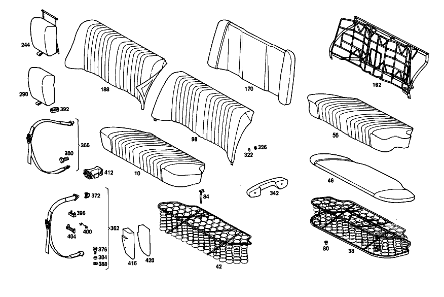

| № | Артикул | Название | Кол. | Примечание | Ограничение |
|---|---|---|---|---|---|
| 10 | A 110 920 27 20 | ПОДУШКИ ЗАДНИХ СИДЕНИЙ | 1 | ТКАНЬ ОБИВКИ [002] 010 FROM CHASSIS 130558; 110 FROM CHASSIS 225648 | |
| 38 | A 108 920 01 22 | - РАМА ПОДУШКИ | - | ||
| 38 | A 108 920 03 22 | - РАМА ПОДУШКИ | 1 | с SPRING CORE | |
| 42 | A 110 920 13 40 | - КОРОБ ПРУЖИНЫ | 1 | [001] 010 UP TO CHASSIS 130557; 110 UP TO CHASSIS 225647 | |
| 46 | A 110 924 05 14 | - НАКЛАДКА | 1 | [002] 010 FROM CHASSIS 130558; 110 FROM CHASSIS 225648 | |
| 56 | A 110 920 27 46 | - ОБИВКА | 1 | ТКАНЬ ОБИВКИ [002] 010 FROM CHASSIS 130558; 110 FROM CHASSIS 225648 | |
| 80 | A 000 997 65 81 | КАБ. ВТУЛКА | 4 | ЗАДН. ПОДУШКА НА ПОЛУ | |
| 84 | A 110 920 01 14 | ДЕРЖАТЕЛЬ | 2 | ЗАДН. ПОДУШКА НА ПОЛУ [002] 010 FROM CHASSIS 130558; 110 FROM CHASSIS 225648 [011] 010 UP TO CHASSIS 162208; 011 UP TO CHASSIS 017208; 110 UP TO CHASSIS 289679 | |
| 98 | A 110 920 24 30 | СПИНКА СИДЕНЬЯ | 1 | ТКАНЬ ОБИВКИ [002] 010 FROM CHASSIS 130558; 110 FROM CHASSIS 225648 | |
| 162 | A 110 920 00 34 | - РАМА СПИНКИ | 1 | с SPRING CORE | |
| 170 | A 110 924 04 16 | - НАКЛАДКА | 1 | ТКАНЬ ОБИВКИ [002] 010 FROM CHASSIS 130558; 110 FROM CHASSIS 225648 | |
| 188 | A 110 920 17 47 | - ОБИВКА | - | ||
| 244 | A 111 970 36 30 | - ПОДЛОКОТНИК ОТКИДН. | 1 | ТКАНЬ ОБИВКИ [402] БОЛЬШЕ НЕ ПОСТАВЛЯЕТСЯ [002] 010 FROM CHASSIS 130558; 110 FROM CHASSIS 225648 [017] 010 UP TO CHASSIS 154561; 011 UP TO CHASSIS 013336; 110 UP TO CHASSIS 271740 | |
| 290 | A 111 970 20 47 | - ОБИВКА | 1 | ТКАНЬ ОБИВКИ [002] 010 FROM CHASSIS 130558; 110 FROM CHASSIS 225648 [017] 010 UP TO CHASSIS 154561; 011 UP TO CHASSIS 013336; 110 UP TO CHASSIS 271740 | |
| 322 | A 000 990 01 48 | Диск | 2 | REAR BACKREST TO REAR BODY PANEL | |
| 326 | N 000934 006007 | Гайка | 2 | REAR BACKREST TO REAR BODY PANEL | |
| 342 | A 112 970 03 01 | ПОДЛОКОТНИК | - | [415] ПРИМЕЧ. ПО ЗАМЕНЕ ПРИМЕНИМО ТОЛЬКО ДЛЯ СТОЯЩИХ РЯДОМ ПОЗИЦИЙ [028] 010 UP TO CHASSIS 188187 EXCEPT FOR, SEE FOOTNOTE 29; 011 UP TO CHASSIS 032040 EXCEPT FOR, SEE FOOTNOTE 30; 110 UP TO CHASSIS 352302 EXCEPT FOR, SEE FOOTNOTE 31 [029] 188146- 188148, 188150, 188152, 188155, 188157, 188160, 188162, 188164, 188166- 188172, 188174- 188182, 188184- 188186. [030] 031989, 031991, 031993- 031995, 031998- 032039. [031] 352105, 352109, 352119, 352123, 352125, 352126, 352128, 352130- 352132, 352134- 352141, 352143- 352146, 352151- 352165, 352167- 352173, 352175- 352188, 352190- 352199, 352201- 352301. | |
| 362 | A 110 860 12 85 | РЕМЕНЬ БЕЗОПАСНОСТИ | 2 | FRONT SEATS OR FRONT SEAT BENCH [402] БОЛЬШЕ НЕ ПОСТАВЛЯЕТСЯ [036] 010 FROM CHASSIS 004675 ALSO INSTALLED ON, SEE FOOTNOTE 33; 110 FROM CHASSIS 006075 ALSO INSTALLED ON, SEE FOOTNOTE 34 [033] 004641, 004646, 004652, 004653, 004655, 004657, 004660, 004661, 004663- 004666, 004668- 004673. [034] 006017, 006020, 006021, 006024, 006028- 006031, 006033- 006035, 006037- 006041, 006044- 006046, 006048, 006050- 006055, 006058- 006060, 006062- 006068, 006070- 006073. | |
| 366 | A 110 860 13 85 | РЕМЕНЬ БЕЗОПАСНОСТИ | 2 | ЗАДНЕЕ СИДЕНЬЕ [037] 010 FROM CHASSIS 012212; 110 FROM CHASSIS 017010 | |
| 372 | A 113 868 00 30 | - КОЛПАЧОК | 4 | [402] БОЛЬШЕ НЕ ПОСТАВЛЯЕТСЯ [039] 010,011 FROM CHASSIS 072313; 110 FROM CHASSIS 112931 | |
| 376 | A 000 984 08 33 | - БОЛТ | - | ||
| 376 | A 000 984 10 33 | - БОЛТ | 0 | [039] 010,011 FROM CHASSIS 072313; 110 FROM CHASSIS 112931 | |
| 376 | A 000 984 10 33 | - БОЛТ | 4 | СИДЕНЬЕ ВОДИТЕЛЯ | |
| 376 | A 000 984 10 33 | - БОЛТ | 2 | ЗАДНЕЕ СИДЕНЬЕ | |
| 380 | A 001 990 87 01 | - БОЛТ | 2 | ЗАДНЕЕ СИДЕНЬЕ [039] 010,011 FROM CHASSIS 072313; 110 FROM CHASSIS 112931 | |
| 384 | A 000 991 00 35 | - ДИСТАНЦИОННОЕ КОЛЬЦО | 6 | [039] 010,011 FROM CHASSIS 072313; 110 FROM CHASSIS 112931 | |
| 388 | A 001 990 02 40 | - ШАЙБА | 6 | [039] 010,011 FROM CHASSIS 072313; 110 FROM CHASSIS 112931 | |
| 392 | A 000 868 00 32 | - СКОБА | 2 | BELT ANCHOR TO REAR END [039] 010,011 FROM CHASSIS 072313; 110 FROM CHASSIS 112931 | |
| 396 | A 000 868 01 32 | - СКОБА | 2 | BELT ANCHOR TO SAFETY BELT [039] 010,011 FROM CHASSIS 072313; 110 FROM CHASSIS 112931 | |
| 400 | A 000 868 01 34 | - ПРУЖИНА | 4 | ||
| 404 | A 000 868 02 32 | - СКОБА | 4 | ||
| 412 | A 110 860 02 14 | ДЕРЖАТЕЛЬ | 2 | TRAY BETWEEN THE FRONT SEATS [040] 010,011 FROM CHASSIS 088432; 110 FROM CHASSIS 141158 | |
| 416 | A 108 976 00 60 | УПОР ДЛЯ НОГ | 1 | Рулевое управление: Вправо [041] 010 FROM CHASSIS 178572; 011 FROM CHASSIS 026828; 110 FROM CHASSIS 329968 | |
| 420 | A 000 983 33 87 | НАПОЛЬНОЕ ПОКРЫТИЕ | 1 | Рулевое управление: Вправо [041] 010 FROM CHASSIS 178572; 011 FROM CHASSIS 026828; 110 FROM CHASSIS 329968 | |
| A 110 920 01 20 | ПОДУШКИ ЗАДНИХ СИДЕНИЙ | - | |||
| A 110 920 10 20 | ПОДУШКИ ЗАДНИХ СИДЕНИЙ | 1 | ТКАНЬ ОБИВКИ [402] БОЛЬШЕ НЕ ПОСТАВЛЯЕТСЯ [001] 010 UP TO CHASSIS 130557; 110 UP TO CHASSIS 225647 | ||
| A 110 920 02 20 | ПОДУШКИ ЗАДНИХ СИДЕНИЙ | 1 | КОЖ. ОБИВКА [402] БОЛЬШЕ НЕ ПОСТАВЛЯЕТСЯ [003] 010 UP TO CHASSIS 038887; 110 UP TO CHASSIS 055341 | ||
| A 110 920 18 20 | ПОДУШКИ ЗАДНИХ СИДЕНИЙ | 1 | LEATHER,PERFORATED [402] БОЛЬШЕ НЕ ПОСТАВЛЯЕТСЯ [004] 010 FROM CHASSIS 038888-077908; 110 FROM CHASSIS 055342-122227 | ||
| A 110 920 23 20 | ПОДУШКИ ЗАДНИХ СИДЕНИЙ | 1 | LEATHER,PERFORATED [402] БОЛЬШЕ НЕ ПОСТАВЛЯЕТСЯ [001] 010 UP TO CHASSIS 130557; 110 UP TO CHASSIS 225647 [005] 010 FROM CHASSIS 077909; 110 FROM CHASSIS 122228 | ||
| A 110 920 29 20 | ПОДУШКИ ЗАДНИХ СИДЕНИЙ | 1 | КОЖ. ОБИВКА [002] 010 FROM CHASSIS 130558; 110 FROM CHASSIS 225648 | ||
| A 110 920 03 20 | ПОДУШКИ ЗАДНИХ СИДЕНИЙ | 1 | IMITATION LEATHER; SEMI\-FLUTED [402] БОЛЬШЕ НЕ ПОСТАВЛЯЕТСЯ [006] 010 UP TO CHASSIS 008321; 110 UP TO CHASSIS 011548 | ||
| A 110 920 16 20 | ПОДУШКИ ЗАДНИХ СИДЕНИЙ | 1 | IMITATION LEATHER; SEMI\-FLUTED [402] БОЛЬШЕ НЕ ПОСТАВЛЯЕТСЯ [007] 010 FROM CHASSIS 008322-093432; 110 FROM CHASSIS 011549-150835 | ||
| A 110 920 07 20 | ПОДУШКИ ЗАДНИХ СИДЕНИЙ | 1 | IMITATION LEATHER; FULL\-FLUTED [402] БОЛЬШЕ НЕ ПОСТАВЛЯЕТСЯ [006] 010 UP TO CHASSIS 008321; 110 UP TO CHASSIS 011548 | ||
| A 110 920 17 20 | ПОДУШКИ ЗАДНИХ СИДЕНИЙ | 1 | IMITATION LEATHER; FULL\-FLUTED [402] БОЛЬШЕ НЕ ПОСТАВЛЯЕТСЯ [008] 010 FROM CHASSIS 008322-072907; 110 FROM CHASSIS 011549-113962 | ||
| A 110 920 24 20 | ПОДУШКИ ЗАДНИХ СИДЕНИЙ | 1 | IMITATION LEATHER; FULL\-FLUTED [402] БОЛЬШЕ НЕ ПОСТАВЛЯЕТСЯ [009] 010 FROM CHASSIS 072908-093432; 110 FROM CHASSIS 113963-150835 | ||
| A 110 920 25 20 | ПОДУШКИ ЗАДНИХ СИДЕНИЙ | 1 | IMITATION LEATHER; FULL\-FLUTED [402] БОЛЬШЕ НЕ ПОСТАВЛЯЕТСЯ [010] 010 FROM CHASSIS 093433-130557; 110 FROM CHASSIS 150836-225647 | ||
| A 110 920 28 20 | ПОДУШКИ ЗАДНИХ СИДЕНИЙ | 1 | IMITATION LEATHER; FULL\-FLUTED [002] 010 FROM CHASSIS 130558; 110 FROM CHASSIS 225648 | ||
| A 110 920 00 22 | - РАМА ПОДУШКИ | - | |||
| A 108 920 00 22 | - РАМА ПОДУШКИ | - | |||
| A 111 924 00 14 | - НАКЛАДКА | 1 | [402] БОЛЬШЕ НЕ ПОСТАВЛЯЕТСЯ [001] 010 UP TO CHASSIS 130557; 110 UP TO CHASSIS 225647 | ||
| A 110 924 10 14 | - НАКЛАДКА | 1 | КОЖ. ОБИВКА [002] 010 FROM CHASSIS 130558; 110 FROM CHASSIS 225648 | ||
| A 110 924 09 14 | - НАКЛАДКА | - | |||
| A 108 924 05 14 | - НАКЛАДКА | - | |||
| A 108 924 06 14 | - НАКЛАДКА | 1 | ИСКУССТВ. КОЖА [002] 010 FROM CHASSIS 130558; 110 FROM CHASSIS 225648 | ||
| A 000 984 20 61 | - Скоба | 14 | КОРОБ ПРУЖИНЫ | ||
| A 110 920 00 46 | - ОБИВКА | 1 | ТКАНЬ ОБИВКИ [402] БОЛЬШЕ НЕ ПОСТАВЛЯЕТСЯ [001] 010 UP TO CHASSIS 130557; 110 UP TO CHASSIS 225647 | ||
| A 110 920 03 46 | - ОБИВКА | 1 | КОЖ. ОБИВКА [402] БОЛЬШЕ НЕ ПОСТАВЛЯЕТСЯ [003] 010 UP TO CHASSIS 038887; 110 UP TO CHASSIS 055341 | ||
| A 110 920 16 46 | - ОБИВКА | 1 | LEATHER,PERFORATED [402] БОЛЬШЕ НЕ ПОСТАВЛЯЕТСЯ [004] 010 FROM CHASSIS 038888-077908; 110 FROM CHASSIS 055342-122227 | ||
| A 110 920 21 46 | - ОБИВКА | 1 | LEATHER,PERFORATED [402] БОЛЬШЕ НЕ ПОСТАВЛЯЕТСЯ [005] 010 FROM CHASSIS 077909; 110 FROM CHASSIS 122228 | ||
| A 110 920 31 46 | - ОБИВКА | 1 | КОЖ. ОБИВКА [002] 010 FROM CHASSIS 130558; 110 FROM CHASSIS 225648 | ||
| A 110 920 04 46 | - ОБИВКА | 1 | IMITATION LEATHER; SEMI\-FLUTED [402] БОЛЬШЕ НЕ ПОСТАВЛЯЕТСЯ [006] 010 UP TO CHASSIS 008321; 110 UP TO CHASSIS 011548 | ||
| A 110 920 15 46 | - ОБИВКА | 1 | IMITATION LEATHER; SEMI\-FLUTED [402] БОЛЬШЕ НЕ ПОСТАВЛЯЕТСЯ [007] 010 FROM CHASSIS 008322-093432; 110 FROM CHASSIS 011549-150835 | ||
| A 111 920 04 46 | - ОБИВКА | 1 | IMITATION LEATHER; FULL\-FLUTED [402] БОЛЬШЕ НЕ ПОСТАВЛЯЕТСЯ [006] 010 UP TO CHASSIS 008321; 110 UP TO CHASSIS 011548 | ||
| A 111 920 10 46 | - ОБИВКА | 1 | IMITATION LEATHER; FULL\-FLUTED [402] БОЛЬШЕ НЕ ПОСТАВЛЯЕТСЯ [008] 010 FROM CHASSIS 008322-072907; 110 FROM CHASSIS 011549-113962 | ||
| A 110 920 17 46 | - ОБИВКА | 1 | IMITATION LEATHER; FULL\-FLUTED [009] 010 FROM CHASSIS 072908-093432; 110 FROM CHASSIS 113963-150835 | ||
| A 110 920 22 46 | - ОБИВКА | 1 | IMITATION LEATHER; FULL\-FLUTED [402] БОЛЬШЕ НЕ ПОСТАВЛЯЕТСЯ [010] 010 FROM CHASSIS 093433-130557; 110 FROM CHASSIS 150836-225647 | ||
| A 110 920 28 46 | - ОБИВКА | 1 | IMITATION LEATHER; FULL\-FLUTED [002] 010 FROM CHASSIS 130558; 110 FROM CHASSIS 225648 | ||
| A 108 920 00 14 | ДЕРЖАТЕЛЬ | 2 | ЗАДН. ПОДУШКА НА ПОЛУ [012] 010 FROM CHASSIS 162209; 011 FROM CHASSIS 017209; 110 FROM CHASSIS 289680 | ||
| A 111 920 00 02 | НАКЛАДКА ПОДУШКИ СИДЕНЬЯ | - | [001] 010 UP TO CHASSIS 130557; 110 UP TO CHASSIS 225647 | ||
| A 110 920 01 02 | НАКЛАДКА ПОДУШКИ СИДЕНЬЯ | 1 | ТКАНЬ ОБИВКИ | ||
| A 110 920 04 02 | НАКЛАДКА ПОДУШКИ СИДЕНЬЯ | 1 | ИСКУССТВ. КОЖА [002] 010 FROM CHASSIS 130558; 110 FROM CHASSIS 225648 | ||
| A 110 920 03 02 | НАКЛАДКА ПОДУШКИ СИДЕНЬЯ | 1 | КОЖ. ОБИВКА [002] 010 FROM CHASSIS 130558; 110 FROM CHASSIS 225648 | ||
| A 110 920 09 30 | СПИНКА СИДЕНЬЯ | 1 | ТКАНЬ ОБИВКИ [402] БОЛЬШЕ НЕ ПОСТАВЛЯЕТСЯ [001] 010 UP TO CHASSIS 130557; 110 UP TO CHASSIS 225647 | ||
| A 110 920 06 30 | СПИНКА СИДЕНЬЯ | 1 | с FOLDING ARMREST; FABRIC [402] БОЛЬШЕ НЕ ПОСТАВЛЯЕТСЯ [001] 010 UP TO CHASSIS 130557; 110 UP TO CHASSIS 225647 [013] СПЕЦИСПОЛНЕНИЕ | ||
| A 110 920 29 30 | СПИНКА СИДЕНЬЯ | 1 | с FOLDING ARMREST; FABRIC [002] 010 FROM CHASSIS 130558; 110 FROM CHASSIS 225648 [013] СПЕЦИСПОЛНЕНИЕ | ||
| A 110 920 03 30 | СПИНКА СИДЕНЬЯ | 1 | КОЖ. ОБИВКА [402] БОЛЬШЕ НЕ ПОСТАВЛЯЕТСЯ [003] 010 UP TO CHASSIS 038887; 110 UP TO CHASSIS 055341 | ||
| A 110 920 12 30 | СПИНКА СИДЕНЬЯ | 1 | LEATHER,PERFORATED [402] БОЛЬШЕ НЕ ПОСТАВЛЯЕТСЯ [004] 010 FROM CHASSIS 038888-077908; 110 FROM CHASSIS 055342-122227 | ||
| A 110 920 17 30 | СПИНКА СИДЕНЬЯ | 1 | LEATHER,PERFORATED [402] БОЛЬШЕ НЕ ПОСТАВЛЯЕТСЯ [005] 010 FROM CHASSIS 077909; 110 FROM CHASSIS 122228 | ||
| A 110 920 27 30 | СПИНКА СИДЕНЬЯ | 1 | КОЖ. ОБИВКА [002] 010 FROM CHASSIS 130558; 110 FROM CHASSIS 225648 | ||
| A 111 920 06 30 | СПИНКА СИДЕНЬЯ | 1 | с FOLDING ARMREST; LEATHER [402] БОЛЬШЕ НЕ ПОСТАВЛЯЕТСЯ [003] 010 UP TO CHASSIS 038887; 110 UP TO CHASSIS 055341 | ||
| A 111 920 13 30 | СПИНКА СИДЕНЬЯ | 1 | с FOLDING ARMREST; LEATHER [402] БОЛЬШЕ НЕ ПОСТАВЛЯЕТСЯ [004] 010 FROM CHASSIS 038888-077908; 110 FROM CHASSIS 055342-122227 | ||
| A 111 920 17 30 | СПИНКА СИДЕНЬЯ | 1 | с FOLDING ARMREST; LEATHER [402] БОЛЬШЕ НЕ ПОСТАВЛЯЕТСЯ [005] 010 FROM CHASSIS 077909; 110 FROM CHASSIS 122228 | ||
| A 110 920 30 30 | СПИНКА СИДЕНЬЯ | 1 | с FOLDING ARMREST; LEATHER [002] 010 FROM CHASSIS 130558; 110 FROM CHASSIS 225648 | ||
| A 110 920 04 30 | СПИНКА СИДЕНЬЯ | 1 | IMITATION LEATHER; SEMI\-FLUTED [402] БОЛЬШЕ НЕ ПОСТАВЛЯЕТСЯ [014] 010 UP TO CHASSIS 093432; 110 UP TO CHASSIS 150835 | ||
| A 110 920 08 30 | СПИНКА СИДЕНЬЯ | 1 | IMITATION LEATHER; FULL\-FLUTED [402] БОЛЬШЕ НЕ ПОСТАВЛЯЕТСЯ [015] 010 UP TO CHASSIS 072907; 110 UP TO CHASSIS 113962 | ||
| A 110 920 19 30 | СПИНКА СИДЕНЬЯ | 1 | ИСКУССТВ. КОЖА [402] БОЛЬШЕ НЕ ПОСТАВЛЯЕТСЯ [009] 010 FROM CHASSIS 072908-093432; 110 FROM CHASSIS 113963-150835 | ||
| A 110 920 21 30 | СПИНКА СИДЕНЬЯ | 1 | ИСКУССТВ. КОЖА [402] БОЛЬШЕ НЕ ПОСТАВЛЯЕТСЯ [010] 010 FROM CHASSIS 093433-130557; 110 FROM CHASSIS 150836-225647 | ||
| A 110 920 25 30 | СПИНКА СИДЕНЬЯ | 1 | ИСКУССТВ. КОЖА [002] 010 FROM CHASSIS 130558; 110 FROM CHASSIS 225648 | ||
| A 110 920 07 30 | СПИНКА СИДЕНЬЯ | 1 | с FOLDING ARMREST;IMITATION LEATHER [402] БОЛЬШЕ НЕ ПОСТАВЛЯЕТСЯ [014] 010 UP TO CHASSIS 093432; 110 UP TO CHASSIS 150835 | ||
| A 111 920 07 30 | СПИНКА СИДЕНЬЯ | 1 | с FOLDING ARMREST;IMITATION LEATHER [402] БОЛЬШЕ НЕ ПОСТАВЛЯЕТСЯ [015] 010 UP TO CHASSIS 072907; 110 UP TO CHASSIS 113962 | ||
| A 111 920 18 30 | СПИНКА СИДЕНЬЯ | 1 | с FOLDING ARMREST;IMITATION LEATHER [402] БОЛЬШЕ НЕ ПОСТАВЛЯЕТСЯ [009] 010 FROM CHASSIS 072908-093432; 110 FROM CHASSIS 113963-150835 | ||
| A 111 920 19 30 | СПИНКА СИДЕНЬЯ | 1 | с FOLDING ARMREST;IMITATION LEATHER [402] БОЛЬШЕ НЕ ПОСТАВЛЯЕТСЯ [010] 010 FROM CHASSIS 093433-130557; 110 FROM CHASSIS 150836-225647 | ||
| A 110 920 31 30 | СПИНКА СИДЕНЬЯ | 1 | с FOLDING ARMREST;IMITATION LEATHER [002] 010 FROM CHASSIS 130558; 110 FROM CHASSIS 225648 | ||
| A 110 920 01 04 | НАКЛАДКА СПИНКИ | 1 | ТКАНЬ ОБИВКИ [001] 010 UP TO CHASSIS 130557; 110 UP TO CHASSIS 225647 | ||
| A 110 920 02 04 | НАКЛАДКА СПИНКИ | 1 | [002] 010 FROM CHASSIS 130558; 110 FROM CHASSIS 225648 | ||
| A 110 920 04 04 | НАКЛАДКА СПИНКИ | - | |||
| A 110 920 05 04 | НАКЛАДКА СПИНКИ | 1 | КОЖ. ОБИВКА [002] 010 FROM CHASSIS 130558; 110 FROM CHASSIS 225648 | ||
| A 110 920 05 04 | НАКЛАДКА СПИНКИ | 1 | ИСКУССТВ. КОЖА [002] 010 FROM CHASSIS 130558; 110 FROM CHASSIS 225648 | ||
| A 111 920 02 04 | НАКЛАДКА СПИНКИ | 1 | с CENTRAL FOLDING ARMREST [014] 010 UP TO CHASSIS 093432; 110 UP TO CHASSIS 150835 | ||
| A 111 920 03 04 | НАКЛАДКА СПИНКИ | 1 | с CENTRAL FOLDING ARMREST [010] 010 FROM CHASSIS 093433-130557; 110 FROM CHASSIS 150836-225647 | ||
| A 111 920 08 04 | НАКЛАДКА СПИНКИ | 1 | с FOLDING ARMREST; FABRIC [002] 010 FROM CHASSIS 130558; 110 FROM CHASSIS 225648 | ||
| A 111 920 09 04 | НАКЛАДКА СПИНКИ | 1 | с FOLDING ARMREST; LEATHER [002] 010 FROM CHASSIS 130558; 110 FROM CHASSIS 225648 | ||
| A 111 920 10 04 | НАКЛАДКА СПИНКИ | 1 | с FOLDING ARMREST;IMITATION LEATHER [016] FROM CHASSIS 013335 | ||
| A 111 920 00 34 | - РАМА СПИНКИ | 1 | ПОДЛОКОТНИК СКЛАДН. [017] 010 UP TO CHASSIS 154561; 011 UP TO CHASSIS 013336; 110 UP TO CHASSIS 271740 | ||
| A 110 920 05 34 | - РАМА СПИНКИ | 1 | ПОДЛОКОТНИК СКЛАДН. [018] 010 FROM CHASSIS 154562; 011 FROM CHASSIS 013335; 110 FROM CHASSIS 271741 | ||
| A 110 924 03 16 | - НАКЛАДКА | 1 | [001] 010 UP TO CHASSIS 130557; 110 UP TO CHASSIS 225647 | ||
| A 110 924 05 16 | - НАКЛАДКА | 1 | ТКАНЬ ОБИВКИ [002] 010 FROM CHASSIS 130558; 110 FROM CHASSIS 225648 [019] FOR VEHICLES HAVING FOLDING ARMREST | ||
| A 110 924 09 16 | - НАКЛАДКА | - | |||
| A 110 924 07 16 | - НАКЛАДКА | - | |||
| A 110 924 04 16 | - НАКЛАДКА | 1 | ИСКУССТВ. КОЖА [002] 010 FROM CHASSIS 130558; 110 FROM CHASSIS 225648 | ||
| A 110 924 10 16 | - НАКЛАДКА | - | |||
| A 110 924 08 16 | - НАКЛАДКА | 1 | ИСКУССТВ. КОЖА [002] 010 FROM CHASSIS 130558; 110 FROM CHASSIS 225648 [019] FOR VEHICLES HAVING FOLDING ARMREST | ||
| A 111 924 00 16 | - НАКЛАДКА | 1 | [001] 010 UP TO CHASSIS 130557; 110 UP TO CHASSIS 225647 [019] FOR VEHICLES HAVING FOLDING ARMREST | ||
| A 000 984 20 61 | - Скоба | 11 | |||
| A 110 920 00 47 | - ОБИВКА | 1 | ТКАНЬ ОБИВКИ [402] БОЛЬШЕ НЕ ПОСТАВЛЯЕТСЯ [001] 010 UP TO CHASSIS 130557; 110 UP TO CHASSIS 225647 | ||
| A 110 920 31 47 | - ОБИВКА | 1 | ТКАНЬ ОБИВКИ [002] 010 FROM CHASSIS 130558; 110 FROM CHASSIS 225648 | ||
| A 110 920 03 47 | - ОБИВКА | 1 | ПОДЛОКОТНИК СКЛАДН. [402] БОЛЬШЕ НЕ ПОСТАВЛЯЕТСЯ [001] 010 UP TO CHASSIS 130557; 110 UP TO CHASSIS 225647 [019] FOR VEHICLES HAVING FOLDING ARMREST | ||
| A 110 920 16 47 | - ОБИВКА | - | |||
| A 110 920 30 47 | - ОБИВКА | 1 | ПОДЛОКОТНИК СКЛАДН. [002] 010 FROM CHASSIS 130558; 110 FROM CHASSIS 225648 [019] FOR VEHICLES HAVING FOLDING ARMREST | ||
| A 110 920 01 47 | - ОБИВКА | 1 | КОЖ. ОБИВКА [402] БОЛЬШЕ НЕ ПОСТАВЛЯЕТСЯ [003] 010 UP TO CHASSIS 038887; 110 UP TO CHASSIS 055341 | ||
| A 110 920 11 47 | - ОБИВКА | 1 | LEATHER,PERFORATED [402] БОЛЬШЕ НЕ ПОСТАВЛЯЕТСЯ [004] 010 FROM CHASSIS 038888-077908; 110 FROM CHASSIS 055342-122227 | ||
| A 110 920 12 47 | - ОБИВКА | 1 | LEATHER,PERFORATED [402] БОЛЬШЕ НЕ ПОСТАВЛЯЕТСЯ [001] 010 UP TO CHASSIS 130557; 110 UP TO CHASSIS 225647 [005] 010 FROM CHASSIS 077909; 110 FROM CHASSIS 122228 | ||
| A 110 920 21 47 | - ОБИВКА | 1 | КОЖ. ОБИВКА [002] 010 FROM CHASSIS 130558; 110 FROM CHASSIS 225648 | ||
| A 111 920 10 47 | - ОБИВКА | 1 | КОЖ. ОБИВКА [402] БОЛЬШЕ НЕ ПОСТАВЛЯЕТСЯ [003] 010 UP TO CHASSIS 038887; 110 UP TO CHASSIS 055341 [042] TO 111 920 06 30 | ||
| A 111 920 19 47 | - ОБИВКА | 1 | LEATHER,PERFORATED [402] БОЛЬШЕ НЕ ПОСТАВЛЯЕТСЯ [004] 010 FROM CHASSIS 038888-077908; 110 FROM CHASSIS 055342-122227 [043] TO 111 920 13 30 | ||
| A 111 920 22 47 | - ОБИВКА | 1 | LEATHER,PERFORATED [402] БОЛЬШЕ НЕ ПОСТАВЛЯЕТСЯ [005] 010 FROM CHASSIS 077909; 110 FROM CHASSIS 122228 | ||
| A 110 920 22 47 | - ОБИВКА | 1 | КОЖ. ОБИВКА [002] 010 FROM CHASSIS 130558; 110 FROM CHASSIS 225648 [019] FOR VEHICLES HAVING FOLDING ARMREST | ||
| A 110 920 02 47 | - ОБИВКА | 1 | IMITATION LEATHER; SEMI\-FLUTED [402] БОЛЬШЕ НЕ ПОСТАВЛЯЕТСЯ [014] 010 UP TO CHASSIS 093432; 110 UP TO CHASSIS 150835 | ||
| A 110 920 06 47 | - ОБИВКА | 1 | IMITATION LEATHER; FULL\-FLUTED [402] БОЛЬШЕ НЕ ПОСТАВЛЯЕТСЯ [015] 010 UP TO CHASSIS 072907; 110 UP TO CHASSIS 113962 | ||
| A 110 920 13 47 | - ОБИВКА | 1 | IMITATION LEATHER; FULL\-FLUTED [402] БОЛЬШЕ НЕ ПОСТАВЛЯЕТСЯ [009] 010 FROM CHASSIS 072908-093432; 110 FROM CHASSIS 113963-150835 | ||
| A 110 920 14 47 | - ОБИВКА | 1 | IMITATION LEATHER; FULL\-FLUTED [402] БОЛЬШЕ НЕ ПОСТАВЛЯЕТСЯ [010] 010 FROM CHASSIS 093433-130557; 110 FROM CHASSIS 150836-225647 | ||
| A 110 920 19 47 | - ОБИВКА | 1 | IMITATION LEATHER; FULL\-FLUTED [402] БОЛЬШЕ НЕ ПОСТАВЛЯЕТСЯ [002] 010 FROM CHASSIS 130558; 110 FROM CHASSIS 225648 | ||
| A 110 920 04 47 | - ОБИВКА | 1 | IMITATION LEATHER; SEMI\-FLUTED [402] БОЛЬШЕ НЕ ПОСТАВЛЯЕТСЯ [014] 010 UP TO CHASSIS 093432; 110 UP TO CHASSIS 150835 [044] TO 110 920 07 30 | ||
| A 111 920 11 47 | - ОБИВКА | 1 | IMITATION LEATHER; FULL\-FLUTED [402] БОЛЬШЕ НЕ ПОСТАВЛЯЕТСЯ [015] 010 UP TO CHASSIS 072907; 110 UP TO CHASSIS 113962 [045] TO 111 920 07 30 | ||
| A 111 920 23 47 | - ОБИВКА | 1 | IMITATION LEATHER; FULL\-FLUTED [402] БОЛЬШЕ НЕ ПОСТАВЛЯЕТСЯ [009] 010 FROM CHASSIS 072908-093432; 110 FROM CHASSIS 113963-150835 | ||
| A 111 920 24 47 | - ОБИВКА | 1 | IMITATION LEATHER; FULL\-FLUTED [402] БОЛЬШЕ НЕ ПОСТАВЛЯЕТСЯ [010] 010 FROM CHASSIS 093433-130557; 110 FROM CHASSIS 150836-225647 | ||
| A 110 920 20 47 | - ОБИВКА | 1 | IMITATION LEATHER; FULL\-FLUTED [002] 010 FROM CHASSIS 130558; 110 FROM CHASSIS 225648 [019] FOR VEHICLES HAVING FOLDING ARMREST | ||
| A 000 988 27 78 | - Скоба | 26 | ОБИВКА НА РАМЕ ЗАДН. СПИНКИ [020] 010 UP TO CHASSIS 068345; 110 UP TO CHASSIS 105977 | ||
| A 001 988 76 78 | - Скоба | 16 | [020] 010 UP TO CHASSIS 068345; 110 UP TO CHASSIS 105977 | ||
| A 110 970 02 30 | - ПОДЛОКОТНИК ОТКИДН. | 1 | ТКАНЬ ОБИВКИ [402] БОЛЬШЕ НЕ ПОСТАВЛЯЕТСЯ [001] 010 UP TO CHASSIS 130557; 110 UP TO CHASSIS 225647 | ||
| A 110 970 30 30 | - ПОДЛОКОТНИК ОТКИДН. | 1 | ТКАНЬ ОБИВКИ [016] FROM CHASSIS 013335 [020] 010 UP TO CHASSIS 068345; 110 UP TO CHASSIS 105977 | ||
| A 111 970 16 30 | - ПОДЛОКОТНИК ОТКИДН. | 1 | КОЖ. ОБИВКА [402] БОЛЬШЕ НЕ ПОСТАВЛЯЕТСЯ [021] 010 UP TO CHASSIS 077908; 110 UP TO CHASSIS 122227 | ||
| A 111 970 31 30 | - ПОДЛОКОТНИК ОТКИДН. | 1 | КОЖ. ОБИВКА [402] БОЛЬШЕ НЕ ПОСТАВЛЯЕТСЯ [001] 010 UP TO CHASSIS 130557; 110 UP TO CHASSIS 225647 [005] 010 FROM CHASSIS 077909; 110 FROM CHASSIS 122228 | ||
| A 110 970 25 30 | - ПОДЛОКОТНИК ОТКИДН. | 1 | КОЖ. ОБИВКА [002] 010 FROM CHASSIS 130558; 110 FROM CHASSIS 225648 [017] 010 UP TO CHASSIS 154561; 011 UP TO CHASSIS 013336; 110 UP TO CHASSIS 271740 | ||
| A 108 970 29 30 | - ПОДЛОКОТНИК ОТКИДН. | 1 | КОЖ. ОБИВКА [018] 010 FROM CHASSIS 154562; 011 FROM CHASSIS 013335; 110 FROM CHASSIS 271741 | ||
| A 110 970 03 30 | - ПОДЛОКОТНИК ОТКИДН. | 1 | IMITATION LEATHER; SEMI\-FLUTED [402] БОЛЬШЕ НЕ ПОСТАВЛЯЕТСЯ [014] 010 UP TO CHASSIS 093432; 110 UP TO CHASSIS 150835 | ||
| A 111 970 17 30 | - ПОДЛОКОТНИК ОТКИДН. | 1 | IMITATION LEATHER; FULL\-FLUTED [402] БОЛЬШЕ НЕ ПОСТАВЛЯЕТСЯ [015] 010 UP TO CHASSIS 072907; 110 UP TO CHASSIS 113962 | ||
| A 111 970 32 30 | - ПОДЛОКОТНИК ОТКИДН. | 1 | IMITATION LEATHER; FULL\-FLUTED [402] БОЛЬШЕ НЕ ПОСТАВЛЯЕТСЯ [009] 010 FROM CHASSIS 072908-093432; 110 FROM CHASSIS 113963-150835 | ||
| A 111 970 33 30 | - ПОДЛОКОТНИК ОТКИДН. | 1 | IMITATION LEATHER; FULL\-FLUTED [402] БОЛЬШЕ НЕ ПОСТАВЛЯЕТСЯ [010] 010 FROM CHASSIS 093433-130557; 110 FROM CHASSIS 150836-225647 | ||
| A 110 970 26 30 | - ПОДЛОКОТНИК ОТКИДН. | 1 | IMITATION LEATHER; FULL\-FLUTED [002] 010 FROM CHASSIS 130558; 110 FROM CHASSIS 225648 [017] 010 UP TO CHASSIS 154561; 011 UP TO CHASSIS 013336; 110 UP TO CHASSIS 271740 | ||
| A 108 970 30 30 | - ПОДЛОКОТНИК ОТКИДН. | 1 | IMITATION LEATHER; FULL\-FLUTED [018] 010 FROM CHASSIS 154562; 011 FROM CHASSIS 013335; 110 FROM CHASSIS 271741 | ||
| A 111 970 28 30 | - ПОДЛОКОТНИК ОТКИДН. | - | |||
| A 111 970 71 30 | - ПОДЛОКОТНИК ОТКИДН. | 1 | COMPLETE,BUT LESS COVER [001] 010 UP TO CHASSIS 130557; 110 UP TO CHASSIS 225647 [022] FABRIC AND LEATHER | ||
| A 111 970 71 30 | - ПОДЛОКОТНИК ОТКИДН. | 1 | [014] 010 UP TO CHASSIS 093432; 110 UP TO CHASSIS 150835 [023] ИСКУССТВ. КОЖА | ||
| A 111 970 35 30 | - ПОДЛОКОТНИК ОТКИДН. | 1 | COMPLETE,BUT LESS COVER [010] 010 FROM CHASSIS 093433-130557; 110 FROM CHASSIS 150836-225647 [023] ИСКУССТВ. КОЖА | ||
| A 111 970 37 30 | - ПОДЛОКОТНИК ОТКИДН. | 1 | FABRIC & LEATHER; LESS COVER [002] 010 FROM CHASSIS 130558; 110 FROM CHASSIS 225648 [017] 010 UP TO CHASSIS 154561; 011 UP TO CHASSIS 013336; 110 UP TO CHASSIS 271740 | ||
| A 110 970 46 30 | - ПОДЛОКОТНИК ОТКИДН. | 1 | FABRIC & LEATHER; LESS COVER [018] 010 FROM CHASSIS 154562; 011 FROM CHASSIS 013335; 110 FROM CHASSIS 271741 | ||
| A 111 970 38 30 | - ПОДЛОКОТНИК ОТКИДН. | 1 | ИСКУССТВ. КОЖА [402] БОЛЬШЕ НЕ ПОСТАВЛЯЕТСЯ [002] 010 FROM CHASSIS 130558; 110 FROM CHASSIS 225648 [017] 010 UP TO CHASSIS 154561; 011 UP TO CHASSIS 013336; 110 UP TO CHASSIS 271740 | ||
| A 110 970 48 30 | - ПОДЛОКОТНИК ОТКИДН. | 1 | ИСКУССТВ. КОЖА [018] 010 FROM CHASSIS 154562; 011 FROM CHASSIS 013335; 110 FROM CHASSIS 271741 | ||
| A 110 970 00 47 | - ОБИВКА | 1 | ТКАНЬ ОБИВКИ [001] 010 UP TO CHASSIS 130557; 110 UP TO CHASSIS 225647 | ||
| A 110 970 37 47 | - ОБИВКА | 1 | ТКАНЬ ОБИВКИ [018] 010 FROM CHASSIS 154562; 011 FROM CHASSIS 013335; 110 FROM CHASSIS 271741 | ||
| A 111 970 10 47 | - ОБИВКА | 1 | КОЖ. ОБИВКА [402] БОЛЬШЕ НЕ ПОСТАВЛЯЕТСЯ [021] 010 UP TO CHASSIS 077908; 110 UP TO CHASSIS 122227 | ||
| A 111 970 16 47 | - ОБИВКА | 1 | КОЖ. ОБИВКА [402] БОЛЬШЕ НЕ ПОСТАВЛЯЕТСЯ [001] 010 UP TO CHASSIS 130557; 110 UP TO CHASSIS 225647 [005] 010 FROM CHASSIS 077909; 110 FROM CHASSIS 122228 | ||
| A 110 970 20 47 | - ОБИВКА | 1 | КОЖ. ОБИВКА [002] 010 FROM CHASSIS 130558; 110 FROM CHASSIS 225648 [017] 010 UP TO CHASSIS 154561; 011 UP TO CHASSIS 013336; 110 UP TO CHASSIS 271740 | ||
| A 108 970 35 47 | - ОБИВКА | 1 | [402] БОЛЬШЕ НЕ ПОСТАВЛЯЕТСЯ [018] 010 FROM CHASSIS 154562; 011 FROM CHASSIS 013335; 110 FROM CHASSIS 271741 | ||
| A 110 970 01 47 | - ОБИВКА | 1 | IMITATION LEATHER; SEMI\-FLUTED [014] 010 UP TO CHASSIS 093432; 110 UP TO CHASSIS 150835 | ||
| A 111 970 11 47 | - ОБИВКА | 1 | [402] БОЛЬШЕ НЕ ПОСТАВЛЯЕТСЯ [015] 010 UP TO CHASSIS 072907; 110 UP TO CHASSIS 113962 | ||
| A 111 970 17 47 | - ОБИВКА | 1 | [402] БОЛЬШЕ НЕ ПОСТАВЛЯЕТСЯ [009] 010 FROM CHASSIS 072908-093432; 110 FROM CHASSIS 113963-150835 | ||
| A 111 970 18 47 | - ОБИВКА | 1 | [010] 010 FROM CHASSIS 093433-130557; 110 FROM CHASSIS 150836-225647 | ||
| A 110 970 13 47 | - ОБИВКА | 1 | [002] 010 FROM CHASSIS 130558; 110 FROM CHASSIS 225648 [017] 010 UP TO CHASSIS 154561; 011 UP TO CHASSIS 013336; 110 UP TO CHASSIS 271740 | ||
| A 108 970 36 47 | - ОБИВКА | 1 | [402] БОЛЬШЕ НЕ ПОСТАВЛЯЕТСЯ [018] 010 FROM CHASSIS 154562; 011 FROM CHASSIS 013335; 110 FROM CHASSIS 271741 | ||
| N 006799 004001 | - Стопорная шайба | 4 | HINGE TO UPHOLSTERY PANEL [016] FROM CHASSIS 013335 | ||
| N 000433 006405 | - Шайба | 2 | HINGE TO UPHOLSTERY PANEL [016] FROM CHASSIS 013335 | ||
| N 000137 006204 | - Пружинная шайба | 2 | HINGE TO UPHOLSTERY PANEL [016] FROM CHASSIS 013335 | ||
| N 000933 006121 | Винт | - | |||
| N 304017 006020 | Винт с 6-гранной головкой | 2 | REAR BACKREST TO WHEELHOUSE PANEL; M6X20 | ||
| N 000137 006204 | Пружинная шайба | 2 | REAR BACKREST TO WHEELHOUSE PANEL | ||
| N 009021 006103 | Шайба | - | |||
| N 009021 006208 | Шайба | 2 | REAR BACKREST TO WHEELHOUSE PANEL; 6 MM | ||
| A 000 987 15 41 | КОЛЬЦО РЕЗИНОВОЕ | - | |||
| A 000 987 38 41 | КОЛЬЦО РЕЗИНОВОЕ | 2 | REAR BACKREST TO WHEELHOUSE PANEL | ||
| A 000 990 01 48 | Диск | 2 | REAR BACKREST TO WHEELHOUSE PANEL | ||
| N 000934 006007 | Гайка | 4 | REAR BACKREST TO WHEELHOUSE PANEL | ||
| A 110 970 05 01 | ПОДЛОКОТНИК | - | [415] ПРИМЕЧ. ПО ЗАМЕНЕ ПРИМЕНИМО ТОЛЬКО ДЛЯ СТОЯЩИХ РЯДОМ ПОЗИЦИЙ | ||
| A 112 970 03 01 | ПОДЛОКОТНИК | - | [415] ПРИМЕЧ. ПО ЗАМЕНЕ ПРИМЕНИМО ТОЛЬКО ДЛЯ СТОЯЩИХ РЯДОМ ПОЗИЦИЙ | ||
| A 110 970 07 01 | ПОДЛОКОТНИК | 2 | СЛЕВА | ||
| A 110 970 06 01 | ПОДЛОКОТНИК | - | [415] ПРИМЕЧ. ПО ЗАМЕНЕ ПРИМЕНИМО ТОЛЬКО ДЛЯ СТОЯЩИХ РЯДОМ ПОЗИЦИЙ [027] ИСПОЛЬЗОВАТЬ СТАРЫЙ НОМЕР ДЕТАЛИ | ||
| A 112 970 04 01 | ПОДЛОКОТНИК | - | [415] ПРИМЕЧ. ПО ЗАМЕНЕ ПРИМЕНИМО ТОЛЬКО ДЛЯ СТОЯЩИХ РЯДОМ ПОЗИЦИЙ [028] 010 UP TO CHASSIS 188187 EXCEPT FOR, SEE FOOTNOTE 29; 011 UP TO CHASSIS 032040 EXCEPT FOR, SEE FOOTNOTE 30; 110 UP TO CHASSIS 352302 EXCEPT FOR, SEE FOOTNOTE 31 [029] 188146- 188148, 188150, 188152, 188155, 188157, 188160, 188162, 188164, 188166- 188172, 188174- 188182, 188184- 188186. [030] 031989, 031991, 031993- 031995, 031998- 032039. [031] 352105, 352109, 352119, 352123, 352125, 352126, 352128, 352130- 352132, 352134- 352141, 352143- 352146, 352151- 352165, 352167- 352173, 352175- 352188, 352190- 352199, 352201- 352301. | ||
| A 112 970 04 01 | ПОДЛОКОТНИК | - | [415] ПРИМЕЧ. ПО ЗАМЕНЕ ПРИМЕНИМО ТОЛЬКО ДЛЯ СТОЯЩИХ РЯДОМ ПОЗИЦИЙ | ||
| A 110 970 08 01 | ПОДЛОКОТНИК | 2 | СПРАВА | ||
| N 007987 006134 | БОЛТ | 8 | |||
| A 000 990 53 91 | ГАЙКОДЕРЖАТЕЛЬ | - | [415] ПРИМЕЧ. ПО ЗАМЕНЕ ПРИМЕНИМО ТОЛЬКО ДЛЯ СТОЯЩИХ РЯДОМ ПОЗИЦИЙ | ||
| A 000 990 83 91 | ГАЙКОДЕРЖАТЕЛЬ | - | |||
| A 000 990 71 91 | Гайкодержатель | 8 | РЕМНИ БЕЗОПАСНОСТИ [013] СПЕЦИСПОЛНЕНИЕ | ||
| A 110 860 04 85 | РЕМЕНЬ БЕЗОПАСНОСТИ | 2 | FRONT SEATS OR FRONT SEAT BENCH [402] БОЛЬШЕ НЕ ПОСТАВЛЯЕТСЯ [032] 010 UP TO CHASSIS 004674 EXCEPT FOR, SEE FOOTNOTE 33; 110 UP TO CHASSIS 006074 EXCEPT FOR, SEE FOOTNOTE 34 [033] 004641, 004646, 004652, 004653, 004655, 004657, 004660, 004661, 004663- 004666, 004668- 004673. [034] 006017, 006020, 006021, 006024, 006028- 006031, 006033- 006035, 006037- 006041, 006044- 006046, 006048, 006050- 006055, 006058- 006060, 006062- 006068, 006070- 006073. | ||
| A 110 860 05 85 | РЕМЕНЬ БЕЗОПАСНОСТИ | 2 | ЗАДНЕЕ СИДЕНЬЕ [035] 010 UP TO CHASSIS 012211; 110 UP TO CHASSIS 017009 | ||
| A 110 868 00 30 | - КОЛПАЧОК | 2 | [038] 010 UP TO CHASSIS 072312; 110 UP TO CHASSIS 112930 | ||
| A 000 868 03 32 | - СКОБА | 4 | [402] БОЛЬШЕ НЕ ПОСТАВЛЯЕТСЯ | ||
| A 000 984 09 33 | - БОЛТ | 0 | [402] БОЛЬШЕ НЕ ПОСТАВЛЯЕТСЯ | ||
| A 000 984 09 33 | - БОЛТ | 4 | DRIVER'S SEAT [402] БОЛЬШЕ НЕ ПОСТАВЛЯЕТСЯ | ||
| A 000 984 09 33 | - БОЛТ | 2 | ЗАДНЕЕ СИДЕНЬЕ [402] БОЛЬШЕ НЕ ПОСТАВЛЯЕТСЯ | ||
| N 000933 010028 | - Винт | 2 | ЗАДНЕЕ СИДЕНЬЕ |
Позиций: 202 · подписано на схемах: 34 · колесо — плавный зум в курсор, перетаскивание — пан, двойной клик — зум, клик по артикулу — скопировать.